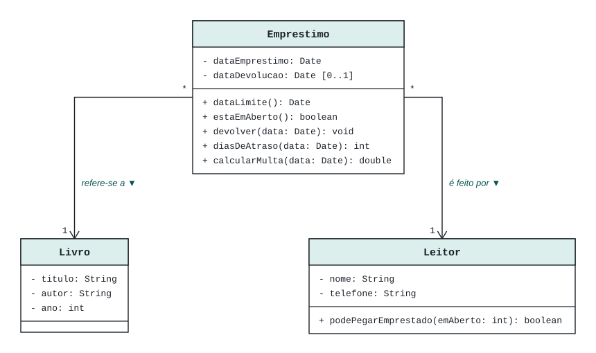

Etapa 0
O exemplo: Biblioteca Comunitária
Um minimundo pequeno, com regras de negócio suficientes para exercitar todas as camadas e todos os tipos de teste.
Minimundo
A Biblioteca Comunitária Cantinho da Leitura empresta livros aos moradores do bairro. Hoje os empréstimos são anotados em um caderno, o que dificulta saber quais livros estão emprestados, com quem estão e quem está atrasado.
Cada livro possui título, autor e ano de publicação. Os leitores são cadastrados com nome e telefone. Cada empréstimo registra o livro, o leitor e a data em que foi realizado.
O prazo de devolução é de 7 (sete) dias, contados a partir da data do empréstimo. Se o livro for devolvido após o prazo, o leitor paga uma multa de R$ 1,00 (um real) por dia de atraso. Um leitor pode ter, no máximo, 3 (três) empréstimos em aberto ao mesmo tempo, e um livro emprestado não pode ser emprestado novamente até que seja devolvido.
Escopo do exemplo
- Registrar um empréstimo.
- Registrar a devolução, informando a multa, se houver.
- Listar os empréstimos em aberto, destacando os atrasados.
Não há cadastros nem login: livros e leitores já vêm preenchidos no banco de dados.
Regras de negócio e onde cada uma é testada
| Regra | Descrição | Onde fica | Teste que comprova |
|---|---|---|---|
| R1 | Prazo de devolução de 7 dias | Emprestimo.dataLimite() |
“é sete dias após a data do empréstimo” |
| R2 | Multa de R$ 1,00 por dia de atraso | Emprestimo.calcularMulta() |
“cobra um real por dia de atraso” |
| R3 | No máximo 3 empréstimos em aberto por leitor | Leitor.podePegarEmprestado() |
“não permite o quarto empréstimo” (etapa 4) |
| R4 | Livro emprestado fica indisponível | GestorEmprestimos.registrar() |
“lança exceção quando o livro já está emprestado” (etapa 4) |
| R5 | Um empréstimo não pode ser devolvido duas vezes | Emprestimo.devolver() |
“lança exceção ao devolver um empréstimo já devolvido” |
Diagrama de Classes do Modelo de Domínio (essencial)
Construído em quatro passos: primeiro as entidades do negócio, depois os comportamentos de negócio, depois os atributos que sustentam esses comportamentos e, por fim, as associações. O passo a passo, com uma imagem para cada passo, está na Etapa 2.

Boas práticas aplicadas neste diagrama
- Setas de direção saindo de
Emprestimo, que conhece o livro e o leitor. - Rótulo de leitura com seta: “Emprestimo refere-se a Livro”, “Emprestimo é feito por Leitor”.
- Multiplicidade nas duas pontas de cada associação.
- Livro e leitor são associações, não atributos do tipo
String. - Sem
id, semsalvar()e sem agregação ou composição — são detalhes de implementação. - Não existe atributo
multa: ela é calculada porcalcularMulta().
Como o projeto vai ficar ao final
A estrutura completa está na coluna da esquerda, em Estrutura do projeto. Ela muda conforme as linguagens escolhidas no topo. Clique em qualquer arquivo para ver o código completo, com comentários, e em qual etapa ele é explicado.
Amostra: a entidade Emprestimo em cada linguagem
As mesmas regras (R1, R2 e R5), escritas em quatro linguagens, com comentários explicando cada parte. Troque a aba ou use o seletor de back-end no topo: a escolha vale para todos os blocos de código da página.
Ver também as classes de apoio: Livro, Leitor e a exceção de domínio
Amostra: o teste unitário da entidade
Cada linguagem usa o seu framework de testes — Kahlan no PHP, Vitest em TypeScript e JavaScript, JUnit 5 no Java —, mas os casos de teste são os mesmos. O comando para executá-los aparece no rodapé do bloco.